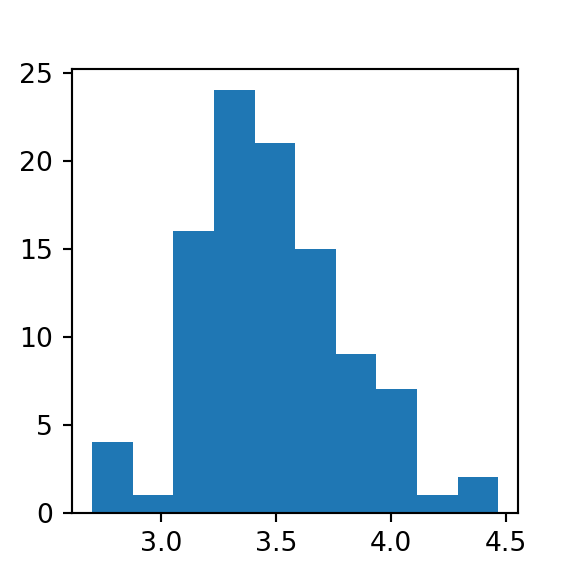
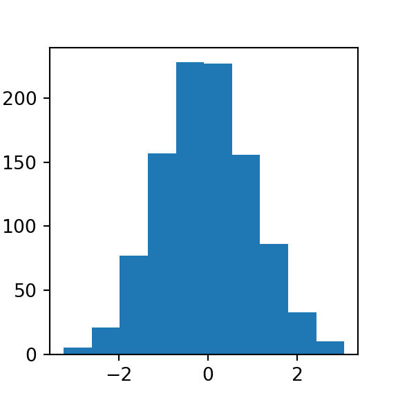
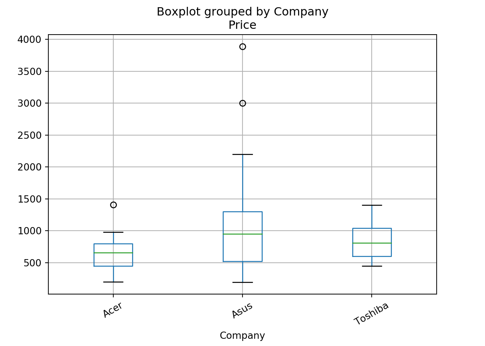
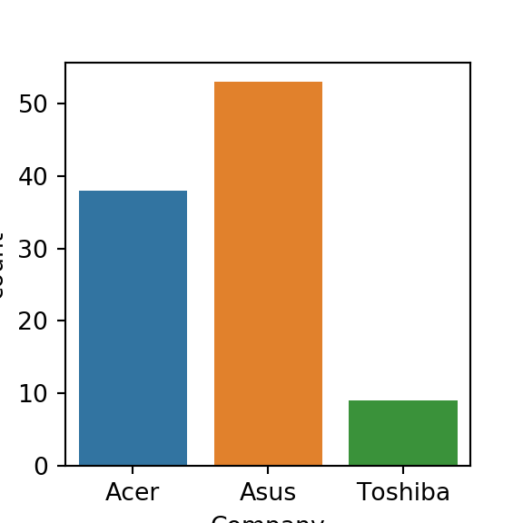

Chapter 4 Statistics and Machine Learning
4.1 Overview of Important Concepts
4.1.1 Probability and Sampling Distributions
Below is a review of conditional probabilities, Bayes’ theorem, and central limit theorem and how to handle questions that work with commonly referenced probability distributions source
4.1.1.1 Conditional Probabilities & Bayes Theorem
In conditional probabilities, we want to figure out the probability of something happening, given that we have some additional information that may influence the outcome.
Figure 4.1: There is an overlap between sets A and B, which represents the intersection of both sets (and the probability of both independent events occurring).
BAYES THEOREM
Bayes theorem is a staple in Data Science interviews. Bayes’ theorem helps us tackle probability questions where we already know about the probability of B given A, but we want to find the probability of A given B.
Above we are solving for A given B by multiplying the independent events in the numerator to get the probability of A and B occurring together. We then divide the by probability of B to get the answer.
Another way to solve these questions is through tree diagrams. Since given a sequence of independent events, you can chain together the singular probabilities to compute the overall probability.
Example 1 :
What is the probability that the applicant passes the stats interview, given that he or she passes the coding interview as well?
- make tree diagram
- multiply the independent events then compute the probability of each outcome
- plug into Bayes theorem
#passes both the stats and coding interviews
both = 0.25 * 0.40
#0.1
#fails stats and passes the coding interview
coding = (0.25 * 0.40) + (0.75 * 0.20)
#0.25
stats_given_coding = both / coding
print(stats_given_coding)## 0.4- Therefore, there is a 40% chance of passing the the stats interview, given that they passed the coding interview.
Example 2:
You have two coins in your hand. Out of the two coins, one is a real coin (heads and tails) and the other is a faulty coin with tails on both sides.
You are blindfolded and forced to choose a random coin and then toss it in the air. The coin lands with tails facing upwards. Find the probability that this is the faulty coin.
# (tails)
# P(faulty)
# P(tails and faulty)
# Print P(faulty | tails)
print(3 / 4)## 0.75print(1 / 2)## 0.5print((1 / 2) * 1)## 0.5print((0.5*1)/(0.5*0.5+0.5*1))## 0.6666666666666666Figure 4.2: tree diagram for faultly coin
4.1.1.2 Central limit theorem
What - Central limit theorem says that with a large enough collection of samples from the same population, the sample means will be normally distributed. Note that this doesn’t make any assumptions about the underlying distribution of the data; with a reasonably large sample of roughly 30 or more, this theorem will always ring true no matter what the population looks like.
Why - Central limit theorem matters because it promises our sampling mean distribution will be normal, therefore we can perform hypothesis tests. More concretely, we can assess the likelihood that a given mean came from a particular distribution and then, based on this, reject or fail to reject our hypothesis. This empowers all of the A/B testing you see in practice.
CLT vs law of large numbers - The law of large numbers states that as the size of a sample is increased, the estimate of the sample mean will more accurately reflect the population mean. This is different from the central limit theorem which is more broadly about normality vs sampling.
law of large numbers example:
from numpy.random import randint
#randint is exclusive for high number (second parameter)
small = randint(1, 7, 10)
small_mean = sum(small) / len(small)
large = randint(1, 7, 1000)
large_mean = sum(large) / len(large)
print(small_mean)## 3.9print(large_mean)## 3.553- Notice how the mean of the large sample has gotten closer to the true expected mean value of 3.5 for a rolled die.
CLT example:
from numpy.random import randint
import matplotlib.pyplot as plt
# generating samples
means = [randint(1, 7, 30).mean() for i in range(100)]
plt.hist(means)## (array([ 4., 6., 14., 22., 16., 18., 13., 3., 3., 1.]), array([2.8 , 2.96666667, 3.13333333, 3.3 , 3.46666667,
## 3.63333333, 3.8 , 3.96666667, 4.13333333, 4.3 ,
## 4.46666667]), <a list of 10 Patch objects>)plt.show()
4.1.1.3 Probabilty distributions
Probability distributions are to statistics what data structures are to computer science.
- Simple description - they indicate the likelihood of an outcome.
- Properties
- probabilities must add up to 1

Figure 4.3: Area under the curve (AUC) equals 1.
- probabilities must add up to 1
- Types
- Bernoulli
- Binomial
- Poisson
- Normal(Gaussian)
- Others: Uniform, hypergeometric, log normal, student’s t, chi-squared, gamma, beta, webull, exponential, geometric, negative binomial
4.1.1.3.1 Bernoulli distribution
Bernoulli is a discrete distribution that models the probability of two outcomes (e.g. a coin flip). There only two possible outcomes, and the probability of one is always 1- <the_other>.
#simulating bernoulli data with scipy stats
from scipy.stats import bernoulli
data = bernoulli.rvs(p=0.5, size=1000)
plt.hist(data)## (array([473., 0., 0., 0., 0., 0., 0., 0., 0., 527.]), array([0. , 0.1, 0.2, 0.3, 0.4, 0.5, 0.6, 0.7, 0.8, 0.9, 1. ]), <a list of 10 Patch objects>)plt.show()When using a small sample size heads and tails don’t have the exact same probability. This is no fluke — when sampling, we won’t always get perfect results. We can increase our accuracy however, when you increase the size of the sample.
4.1.1.3.2 Binomial distribution
The Binomial distribution can be thought of as the sum of the outcomes of multiple Bernoulli trials, meaning those that have an established success and failure. It’s used to model the number of successful outcomes in trials where there is some consistent probability of success.
- Parameters
k- number of successesn- number of trialsp- probability of success
Motivating example: Consider a game where you are trying to make a ball in a basket. You are given 10 shots and you know that you have an 80% chance of making a given shot.
#simulating binomial data with scipy stats
from scipy.stats import binom
data = binom.rvs(n=10, p=0.80, size=1000)
plt.hist(data)## (array([ 6., 29., 0., 80., 0., 211., 297., 0., 263., 114.]), array([ 4. , 4.6, 5.2, 5.8, 6.4, 7. , 7.6, 8.2, 8.8, 9.4, 10. ]), <a list of 10 Patch objects>)plt.show()
# Probability of making 8 or less shots out of 10
prob1 = binom.cdf(k=8, n=10, p=0.8)
# Probability of making 10 out of 10 shots
prob2 = binom.pmf(k=10, n=10, p=0.8)
print(prob1)## 0.6241903616print(prob2)## 0.10737418240000005Remember, interviewers like to start out with fundamental concepts before getting incrementally more complex. Above it started with just showing the general shape of the distribution but went into application.
4.1.1.3.3 Normal (Gaussian) distribution
The normal distribution is a bell-curve shaped continuous probability distribution that is fundamental to many statistical concepts, like sampling and hypothesis testing.Figure 4.4: 68-95-99.7 rule, aka 68% of observations fall within 1 std, 95% of observations fall within 2 std and so on.
# Generate normal data
from scipy.stats import norm
data = norm.rvs(size=1000)
plt.hist(data)## (array([ 9., 30., 101., 174., 257., 234., 137., 42., 11., 5.]), array([-3.14433248, -2.47368438, -1.80303628, -1.13238819, -0.46174009,
## 0.20890801, 0.8795561 , 1.5502042 , 2.2208523 , 2.89150039,
## 3.56214849]), <a list of 10 Patch objects>)plt.show()
# Given a standardized normal distribution, what is the probability
#of an observation greater than 2?
true_prob = 1 - norm.cdf(2)
# Looking at our sample, what is the probability of an observation greater than 2?
sample_prob = sum(obs > 2 for obs in data) / len(data)
print(true_prob)## 0.02275013194817921print(sample_prob)## 0.019Note that the results from the true distribution and sample distribution are different.
4.1.1.3.4 Poisson distribution
The poisson distribution represents a count or the number of times something happened. Unlike the binomial distribution, it’s calculated by an average rate (lambda) instead of a probability p and number of trials n. As the rate of events change the distribution changes as well.
- When to use: use the Poisson when counting events over time given some continuous rate.
- E.g.: In any 15-minute interval, there is a 20% probability that you will see at least one shooting star. What is the probability that you see at least one shooting star in the period of an hour?
4.1.2 Exploratory Data Analysis
4.1.2.1 Descriptive Statistics
There are two most common questions types in interviews along with some other concepts that don’t go in those categories:
- measures of centrality
Core measures
- mean - average (sum / # of observations)
- median - middle value when all observations are sorted
- mode - most common observation, or peak of the distribution
Figure 4.5: Mean, median and mode.
Notes:
- Mean, median and mode are all equal if the distribution is perfectly normal
- Measures of variability
- Core measures
- variance - how far spread out your data points are from each other.
- standard deviation - how far away your data is from the average.
- range - max - min

Figure 4.6: Formula for variance and standard deviation
import math
import numpy as np
nums = [1, 2, 3, 4, 5]
mean = sum(nums) / len(nums)
# Compute the variance and print the std of the list
variance = sum(pow(x - mean, 2) for x in nums) / len(nums)
std = math.sqrt(variance)
# Compute and print the actual result from numpy
real_std = np.array(nums).std()
print(std)## 1.4142135623730951print(real_std)## 1.4142135623730951- Other
- Modality - multiple peaks that show in the data (bi-modal = two peaks)
- Skewness - the symmetry of the distribution (skewness is determined by where the the tail is)
Figure 4.7: Left skewed data
4.1.2.2 Categorical Data
Types of categorical data:
- ordinal - takes on order (e.g. 5 star movie reviews)
- nominal - no order (e.g. gender, or eye color)
Preprocessing categorical variables
- unlike continuous data, to use machine learning on categorical data you need to encode it.
- Types of encoding
- Label encoding - simply assigning a number to the text factor of the category
- One Hot encoding - break every subcategory into its own Boolean column
from sklearn import preprocessing
#What data looks like:
print(laptops[:5].to_numpy().tolist())
# Encoder - check out new values## [['Acer', 'Aspire 3', 400.0], ['Asus', 'Vivobook E200HA', 191.9], ['Asus', 'E402WA-GA010T (E2-6110/2GB/32GB/W10)', 199.0], ['Asus', 'X540UA-DM186 (i3-6006U/4GB/1TB/FHD/Linux)', 389.0], ['Asus', 'X542UQ-GO005 (i5-7200U/8GB/1TB/GeForce', 522.99]]encoder = preprocessing.LabelEncoder()
company_column_encoded = encoder.fit_transform(laptops['Company'])
print(company_column_encoded)## [0 1 1 1 1 0 1 0 0 1 1 1 1 1 0 1 0 0 1 1 0 1 0 1 1 1 1 1 0 0 1 0 0 1 0 2 1
## 1 0 1 2 1 0 0 0 0 2 0 2 0 0 0 1 2 0 1 1 1 0 0 1 1 0 1 1 1 1 1 0 1 1 2 0 0
## 0 1 0 1 0 1 1 1 2 0 1 0 1 0 0 1 2 1 1 1 1 2 1 1 0 1]# One-hot encode Company for laptops2
laptops2 = pd.get_dummies(data=laptops, columns=['Company'])
print(laptops2.info())## <class 'pandas.core.frame.DataFrame'>
## RangeIndex: 100 entries, 0 to 99
## Data columns (total 5 columns):
## Product 100 non-null object
## Price 100 non-null float64
## Company_Acer 100 non-null uint8
## Company_Asus 100 non-null uint8
## Company_Toshiba 100 non-null uint8
## dtypes: float64(1), object(1), uint8(3)
## memory usage: 2.0+ KB
## None- Be careful about the high dimensionality of using one-hot-encoding!
import seaborn as sns
from matplotlib import pyplot as plt
sns.countplot(laptops['Company'])
plt.show()
# Visualize the relationship with price
from matplotlib.pyplot import figure
figure(figsize=(3, 3), dpi=80)
laptops.boxplot('Price', 'Company',rot=30)
plt.show()
4.1.2.3 Two or more variables
Overview: Comparing the relationships between two or more numerical variables including correlation, confidence intervals and more.
- Correlation - describes the relatedness between variables, meaning how much information variables reveal about each other.
Figure 4.8: Correlation with various scatterplots
- Covariance - the average of the product between the values of each sample where the values have each had their mean subtracted.

- difficult to interpret since don’t get a magnitude, but we can use it to get the Pearsons correlation coefficient
- Pearson’s correlation coefficent - denoted as lowercase
r, is the covariance function divided by the product of the sample standard deviations of each variable.
Figure 4.9: Positive r means there is a positive relationship, and vise versa. 1 (or -1) is perfect, 0 is no corelation.
- R^2 - is simply Pearson’s correlation coefficent squared. Interpreted as the amount of variable Y that is explained by X.
# data import hidden - obviously
import seaborn as sns
from matplotlib import pyplot as plt
sns.pairplot(weather)
- Some bivariate comparisons appear more correlated then others.
Lets look at Humidity9am and Humidity3pm closer:
from matplotlib.pyplot import figure
figure(figsize=(3, 3), dpi=80)
plt.scatter(weather['Humidity9am'], weather['Humidity3pm'])
plt.show()# corr is built into pandas
r = weather['Humidity9am'].corr(weather['Humidity3pm'])
# Calculate the r-squared value and print the result
r2 = r * r
print(r2)## 0.446620063530763- We see here that humidity in the morning has a moderately strong correlation with afternoon humidity, giving us a ~0.67 pearson coefficient. When we square that result, we get a r-squared value of ~0.45, meaning that
Humidity9amexplains around 45% of the variability in theHumidity3pmvariable.
Not so robust to outliers When outliers are present the metric is not very robust. So often you must seek other tools when the outliers can’t or shouldn’t be easily removed.
Alternatives:
- Spearman’s/Kendall
Things to consider before removing an outlier:
- If you’re actually building a predictive model, do you have additional data on which to test your model for predictive power?
- If yes, then you can see what happens when you remove this value.
- Does removing it improve your ability to make predictions on new data? Then maybe it really is an outlier. Or is it actually providing some important information on the range of possible but perhaps rare outcomes?
- Would it be unreasonable to expect to see these kinds of extreme values in new data in the future? Then maybe it’s better to include it, or consider a model that can better capture these kinds of values. Like a robust regression
Correlation vs Causation
- Correlation ≠ causation.
- Need experimentation (
sufficiency | necessity)
4.1.3 Statistical Experiments and Significance Testing
Introduction into sampling
A sample is a collection of data from a certain population that is meant to represent the whole. However, sampling only makes up a small proportion of the total population. But with statistics we want to make conclusions about the sample and generalize it to a broader group, also known as inference.

Figure 4.10: Error types in statistics
4.1.3.1 Confiendence Intervals
Confidence interval is a range of values that we are fairly sure includes the true value of an unknown population parameter. It has an associated confidence level that represents the frequency in which the interval will contain this value.
- E.g. a 95% confidence interval means that 95 times out of 100 we can expect our interval to hold the true parameter value of the population.
How to calculate:
- means - take the sample mean and then subtract the appropriate z-score for your confidence level with the population standard deviation over the square root of the number of samples. Takes on a different form if you don’t know the population variance.
- proportions - take the mean plus minus the z-score times the square root of the proportion times its inverse, over the number of samples.
- Both above formulas are alike since they take the mean plus minus some value that is computed. The value is referred to as the margin of error. Adding it to the mean gives us the upper value threshold and subtracting it gives us the lower threshold.
How a interviewer will ask you about CI:
- explain in simple terms
- elaborate on how they are calculated, and maybe implement it.
from scipy.stats import sem, t
data = [1, 2, 3, 4, 5]
confidence = 0.95
z_score = 2.7764451051977987
sample_mean = 3.0
# Compute the standard error and margin of error
std_err = sem(data)
margin_error = std_err * z_score
# Compute and print the lower threshold
lower = sample_mean - margin_error
# Compute and print the upper threshold
upper = sample_mean + margin_error
print(lower)## 1.036756838522439print(upper)## 4.9632431614775605# Calculate the mean and std
mean, std = laptops['Price'].mean(), laptops['Price'].std()
# Compute and print the upper and lower threshold
cut_off = std * 3
lower, upper = mean - cut_off, mean + cut_off
print(lower, 'to', upper)
# Identify and print rows with outliers## -824.6236866989851 to 2562.812886698985outliers = laptops[(laptops['Price'] > upper) |
(laptops['Price'] < lower)]
print(outliers)
# Drop the rows from the dataset## Company Product Price
## 61 Asus ROG G703VI-E5062T 3890.0
## 65 Asus Rog G701VIK-BA060T 2999.0laptops = laptops[(laptops['Price'] <= upper) |
(laptops['Price'] >= lower)]- In this scenario, dropping the outliers was likely the right move since the values were unthinkable for laptops prices. This implies that there was some mistake in data entry or data collection. With that being said, this won’t always be the best path forward. It’s important to understand why you got the outliers that you did and if they provide valuable information before you throw them out.
Using statsmodels instead.
from statsmodels.stats.proportion import proportion_confint
from scipy.stats import binom
heads = binom.rvs(50, 0.5)
confidence_int = proportion_confint(heads, nobs=50, alpha=0.01)
print(confidence_int)
# Repeat this process 10 times ## (0.37917751674685884, 0.7408224832531413)heads = binom.rvs(50, 0.5, size=10)
for val in heads:
# for 90% confidence
confidence_interval = proportion_confint(val, 50, .10)
print(confidence_interval)## (0.36378436885322046, 0.5962156311467796)
## (0.24834363324703929, 0.4716563667529607)
## (0.42406406993539053, 0.6559359300646095)
## (0.507090652487504, 0.732909347512496)
## (0.3440640699353905, 0.5759359300646095)
## (0.4037843688532205, 0.6362156311467796)
## (0.30518968814451874, 0.5348103118554812)
## (0.30518968814451874, 0.5348103118554812)
## (0.3245317440082245, 0.5554682559917755)
## (0.36378436885322046, 0.5962156311467796)- In the loop, there might be at least one confidence interval that does not contain 0.5, the true population proportion for a fair coin flip. You could decrease the likelihood of this happening by increasing your confidence level or lowering the alpha value.
Motivating Example: partial data from an AB test
One-tailed z-test
from statsmodels.stats.proportion import proportions_ztest
conv_rates = results.groupby('Group').mean()
#control conversions
num_control = results[results['Group'] == 'control']['Converted'].sum()
total_control = len(results[results['Group'] == 'control'])
#treatment conversions
num_treat = results[results['Group'] == 'treatment']['Converted'].sum()
total_treat = len(results[results['Group'] == 'treatment'])
count = np.array([num_treat, num_control])
nobs = np.array([total_treat, total_control])
stat, pval = proportions_ztest(count, nobs, alternative="larger")
print('{0:0.3f}'.format(pval))## 0.897Two tailed t-test
- Data - laptops
prices = laptops.groupby('Company').mean()
# Assign the prices of each group
asus = laptops[laptops['Company'] == 'Asus']['Price']
toshiba = laptops[laptops['Company'] == 'Toshiba']['Price']
# Run the t-test
from scipy.stats import ttest_ind
tstat, pval = ttest_ind(asus, toshiba)
print('{0:0.3f}'.format(pval))## 0.5064.1.3.2 Hypothesis testing
Hypothesis testing is just a means of coming to some statistical inference. So we want to look at the distribution of the data and come to some conculsion about something that we think may or may not be true.
Assumptions:
- Random sampling
- Independent observations
- Normally distributed (large enough sample)
- Constant variance
Null equals no effect, alternative represents that the outcome that the treatement does have a conclusive effect
Which test to use?
The test that is used depends on the situation. If you know the population standard deviation and you have a sufficient sample size - z-test, otherwise t-test.
Evaluating results When you run your test, your result will be generated in the form of a test statistic, either a z score or t statistic. Using this, you can compute the p-value, which represents the probability of obtaining the sample results you got, given that the null hypothesis is true.
Data - results the same as the CI z-test examples above.
import pandas as pd
import numpy as np
conv_rates = results.groupby('Group').mean()
print(conv_rates)## Converted
## Group
## control 0.208333
## treatment 0.1153854.1.3.3 Power and sample size
Components of a power analysis:
- effect size (e.g. 20% improvement)
- significance level / alpha value
- power - probability of detecting an effect
- if we see something then we want to have enough power to conclude with high probability that the results are statistically significant.
- lowering power = increasing chance of a Type II error.
from statsmodels.stats.power import zt_ind_solve_power
import statsmodels.stats.proportion as prop
std_effect = prop.proportion_effectsize(0.20, 0.25)
zt_ind_solve_power(effect_size=std_effect, nobs1=None, alpha=0.05, power=0.80)
# 1091.8962 impressions
#increase power to 0.95 -> 800 more observations
std_effect = prop.proportion_effectsize(0.20, 0.25)
zt_ind_solve_power(effect_size=std_effect, nobs1=None, alpha=0.05, power=0.95)
# 1807.76215Visualizing the relationship between power and sample size
from matplotlib.pyplot import figure
figure(figsize=(3, 3), dpi=80)
sample_sizes = np.array(range(5, 100))
effect_sizes = np.array([0.2, 0.5, 0.8])
from statsmodels.stats.power import TTestIndPower
results = TTestIndPower()
# Plot the power analysis
results.plot_power(dep_var='nobs', nobs=sample_sizes, effect_size=effect_sizes)
plt.show()
- Notice that not only does an increase in power result in a larger sample size, but this increase grows exponentially as the minimum effect size is increased.
Tools:
statsmodel.stats.powerzt_ind_solve_power()tt_ind_solve_power()- before we use these methods we need to know standardized minimum effect difference -
proportion_effectsize()can do this by inputting baseline and desired minimum conversion rates.
- before we use these methods we need to know standardized minimum effect difference -
plt_powerfunction in python to visualize
4.1.3.4 Multiple testing
When you run a typical hypothesis test with the significance level set to 0.05, there’s a 5 percent chance that you’ll make a type 1 error and detect an effect that doesn’t exist. The multiple comparisons problem arises when you run several sequential hypothesis tests. Since each test is independent, you can multiply the probability of each type I error to get our combined probability of an error. E.g. 20 hypothesis tests of an associations at a 5% significance makes a 65% chance of at least one error.
Figure 4.11: Sequential multiple testing increases likelyhood of error.
Common approaches to control for mulitiple comparisons
- Bonferroni correction
- Sidak correction
- Step-based procedures
- Tukey’s procedure
- Dunnet’s correction
4.1.3.4.1 Bonferroni correction
Bonferroni correction is a common, conservative and an easy approach to perform. You just adjust the p-value as shown below.
- Side effects: Since the approach is a conservative adjustment, with many tests, the corrected significance level will become very, very small. This reduces power, which means that you are increasingly unlikely to detect a true effect when it occurs.
Without Bonferroni Correction
- Consider a hypothetical situation running 60, 30, and 10 distinct hypothesis tests. Below are the ompute the probability of a Type I error for 60 hypothesis tests with a single-test 5% significance level.
error_rate_60 = 1 - (.95**(60))
error_rate_30 = 1 - (.95**(30))
error_rate_10 = 1 - (.95**(10))
print(error_rate_60)## 0.953930201013048print(error_rate_30)## 0.7853612360570628print(error_rate_10)## 0.4012630607616213- As you can see, the probability of encountering an error is still extremely high. This is where the Bonferroni correction comes in. While a bit conservative, it controls the family-wise error rate for circumstances like these to avoid the high probability of a Type I error.
WITH Bonferroni Correction
from statsmodels.sandbox.stats.multicomp import multipletests
pvals = [.01, .05, .10, .50, .99]
p_adjusted = multipletests(pvals, alpha=0.05, method='bonferroni')
# Print the resulting conclusions and adjusted p-values themselves
print(p_adjusted[0])## [ True False False False False]print(p_adjusted[1])## [0.05 0.25 0.5 1. 1. ]- Above the Bonferroni correction, corrected the family-wise error rate for our 5 hypothesis test results. In the end, only one of the tests remained significant.
4.1.4 Regression and Classification
4.1.4.1 Regression models
Regression is a technique used to model and analyze the relationships between variables and how they contribute to producing a particular outcome. In other words, it’s a way to determine which variables have an impact, which factors interact, and how certain we are about those measures.
Data: weather data with ,in, max temperature and humidity in morning and afternoon.
Linear and logistic regression:
4.1.4.1.1 1. Linear regression
- Output is continuous
#what data looks like
print(weather.info())## <class 'pandas.core.frame.DataFrame'>
## RangeIndex: 15 entries, 0 to 14
## Data columns (total 4 columns):
## MinTemp 15 non-null float64
## MaxTemp 15 non-null float64
## Humidity9am 15 non-null float64
## Humidity3pm 15 non-null float64
## dtypes: float64(4)
## memory usage: 608.0 bytes
## Nonefrom sklearn.linear_model import LinearRegression
from matplotlib import pyplot as plt
from matplotlib.pyplot import figure
figure(figsize=(3, 3), dpi=80)
# reshape(-1,1) needed to ensure has a index value, which indicates to the
#linear model that the data represent a series of observed values for a single
#variable. Similar to going wide to long.
X_train = np.array(weather['Humidity9am']).reshape(-1,1)
y_train = weather['Humidity3pm']
lm = LinearRegression()
lm.fit(X_train, y_train)## LinearRegression(copy_X=True, fit_intercept=True, n_jobs=None, normalize=False)preds = lm.predict(X_train)
# Assign and print coefficient
coef = lm.coef_
print(preds)## [64.05231955 56.01874907 46.52452942 54.5580999 53.09745072 62.59167037
## 65.51296873 61.86134578 50.17615236 66.24329332 61.13102119 40.68193271
## 71.35556544 75.00718838 31.18771306]print(coef)
# Plot your fit to visualize your model## [0.73032459]plt.scatter(X_train, y_train)
plt.plot(X_train, preds, color='red')
plt.show()- Despite some noise in the plot, we have a decent looking fit here using Humidity9am to predict the dependent variable Humidity3pm with a linear model. Furthermore, take another look at our coefficient. This means that for every 1 unit of humidity in the morning, we can expect about 0.80 units of humidity in the afternoon. More practically, this information tells us that humidity drops about 20% from morning to afternoon!
Evaluating models
4.1.4.1.2 Logistic regression
- One of the most common machine learning algorithms for two-class classification
- Output is discrete, which allows us to compute probabilities that each observation belongs to a class, thanks to the sigmoid function. The S-shaped curve takes any real number and maps or converts it between 0 and 1.
from sklearn.linear_model import LogisticRegression
# Create and fit your model
clf = LogisticRegression()
clf.fit(X_train, y_train)
# Compute and print the accuracy## LogisticRegression(C=1.0, class_weight=None, dual=False, fit_intercept=True,
## intercept_scaling=1, l1_ratio=None, max_iter=100,
## multi_class='warn', n_jobs=None, penalty='l2',
## random_state=None, solver='warn', tol=0.0001, verbose=0,
## warm_start=False)
##
## /Users/BigBrother/anaconda/envs/PyData/lib/python3.7/site-packages/sklearn/linear_model/logistic.py:432: FutureWarning: Default solver will be changed to 'lbfgs' in 0.22. Specify a solver to silence this warning.
## FutureWarning)
## /Users/BigBrother/anaconda/envs/PyData/lib/python3.7/site-packages/sklearn/utils/validation.py:724: DataConversionWarning: A column-vector y was passed when a 1d array was expected. Please change the shape of y to (n_samples, ), for example using ravel().
## y = column_or_1d(y, warn=True)acc = clf.score(X_test, y_test)
print(acc)## 0.7708333333333334Assumptions:
- Linear relationship (check with QQplot)
- Errors to be normally distributed ()
- Homoscedastic - uniform variance (< 4:1 is usually a good rule of thumb)
- Independence
4.1.4.2 Evalating models
Regression:
- R-squared (coefficient of determination) - tells us the proption of variance of the dependent variable that is explained by the regression model.
- usually the first metric checked in regression
- can use
scorein python
MAE (Mean absolute error) - is the sum of the absolute residuals over the number of points
MSE (Mean squared error) - is the sum of the residuals squared over the number of points.
r2 = lm.score(X, y)
from sklearn.metrics import mean_squared_error, mean_absolute_error
preds = lm.predict(X)
mse = mean_squared_error(y,preds)
preds = lm.predict(X)
mae = mean_absolute_error(y, preds)
print(r2)## 0.4349683260873261print(mse)## 230.88845883712395print(mae)## 11.818938818487227- Note that our R-squared value tells us the percentage of the variance of y that X is responsible for.
Classification
- Precision - can be interpreted as the percentage of observations that you correctly guessed and is linked to the rate of type 1 error.
- Recall - linked to the rate of type II errors.
- Confusion matrices - shown earlier, but you can use them to determine which error type you would like to prioritize.
- E.g. A spam detector would probably mean that you don’t want to make any type 1 errors (i.e. don’t want to miss real emails that are marked as spam) and want to optimize for precision.
- E.g. Classifying a rare disease you want to avoid type II errors (i.e. ), and you would want to optimize for recall.
from sklearn.metrics import confusion_matrix, precision_score, recall_score
preds = clf.predict(X_test)
matrix = confusion_matrix(y_test, preds)
print(matrix)## [[185 0]
## [ 55 0]]precision = precision_score(y_test, preds)
#Using precision since you don't want to say it will rain when it won't## /Users/BigBrother/anaconda/envs/PyData/lib/python3.7/site-packages/sklearn/metrics/classification.py:1437: UndefinedMetricWarning: Precision is ill-defined and being set to 0.0 due to no predicted samples.
## 'precision', 'predicted', average, warn_for)print(precision)## 0.0recall = recall_score(y_test, preds)
print(recall)## 0.0- You can see here that the precision of our rain prediction model was quite high, meaning that we didn’t make too many Type I errors. However, there were plenty of Type II errors shown in the bottom-left quadrant of the confusion matrix. This is indicated further by the low recall score, meaning that there were plenty of rainy days that we missed out on.
4.1.4.3 Missing data and outliers
How to handle missing data:
Drop the row - easy but could lose data from your dataset that could strengthen the model
df.dropna(inplace=True)
Impute the missing values
- constant value
- randomly select record value
- mean, median, mode
- value estimated by another model (multiple imputation)
Dealing with Outliers
- Standard Deviations - any observations that falls outside of 3 standard deviations from the mean is deemed an outlier.
- Interquartile range (IQR) - Q1 and Q3 minus (1.5 * IQR). IQR is the difference between Q1 and Q3
nulls = laptops[laptops.isnull().any(axis=1)]
print(nulls)## Empty DataFrame
## Columns: [Company, Product, Price]
## Index: []laptops.fillna(0, inplace=True)
print(laptops.head())## Company Product Price
## 0 Acer Aspire 3 400.00
## 1 Asus Vivobook E200HA 191.90
## 2 Asus E402WA-GA010T (E2-6110/2GB/32GB/W10) 199.00
## 3 Asus X540UA-DM186 (i3-6006U/4GB/1TB/FHD/Linux) 389.00
## 4 Asus X542UQ-GO005 (i5-7200U/8GB/1TB/GeForce 522.99laptops.fillna(laptops.Price.median(), inplace=True)
print(laptops.head())## Company Product Price
## 0 Acer Aspire 3 400.00
## 1 Asus Vivobook E200HA 191.90
## 2 Asus E402WA-GA010T (E2-6110/2GB/32GB/W10) 199.00
## 3 Asus X540UA-DM186 (i3-6006U/4GB/1TB/FHD/Linux) 389.00
## 4 Asus X542UQ-GO005 (i5-7200U/8GB/1TB/GeForce 522.99laptops.dropna(inplace=True)
print(laptops.head())## Company Product Price
## 0 Acer Aspire 3 400.00
## 1 Asus Vivobook E200HA 191.90
## 2 Asus E402WA-GA010T (E2-6110/2GB/32GB/W10) 199.00
## 3 Asus X540UA-DM186 (i3-6006U/4GB/1TB/FHD/Linux) 389.00
## 4 Asus X542UQ-GO005 (i5-7200U/8GB/1TB/GeForce 522.994.1.4.5 Bias-variance tradeoff
Types of error in modeling:
- Bias error - comes from simplifying assumptions made by a model to make the target function easier to learn. In general, high bias makes algorithms faster to learn and easier to understand but less flexible. Too much bias can lead to a problem with
under-fittingthe data, which happens when the model is making too many assumptions. High biased algorithms include: linear regression, LDA, and logisitic regression.
Figure 4.12: Line is high biased since it is going in a straight line when the data isn’t linear.
- Variance error - variance is the amount that the estimate of the target function would change if different training data was used. Some variance will exist but, ideally the results wouldn’t change too much from one training dataset to the next. Too much variance in the model leads to
overfitting. It happens when the model is too flexible and fits too closely to the training data, making it not generalizable to unseen data. High variance algorithms include: Decision Trees, k-Nearest Neighbors, and SVM.
Figure 4.13: Line is high variance since it too closely follows the data.
- Irreducible error - won’t focus on.
Goal of modeling
Figure 4.14: Want to balance model complexity to minimize both bias and variance.
4.2 Sample Questions
4.2.1 Comparison of means
So suppose hypothetically Facebook users share, their height in centimeters and their gender. How would you test the hypothesis that men on average are taller?
t-test could be used to compare the means of two different groups if the sample is larger then 30, but if larger then 30 we can use a z-test.
from statsmodels.stats.weightstats import ztest as ztest
women = [82, 84, 85, 89, 91, 91, 92, 94, 99, 99,
82, 84, 85, 89, 91, 91, 92, 94, 99, 99,
105, 109, 109, 109, 110, 112, 112, 113, 114, 114,
105, 109, 109, 109, 110, 112, 112, 113, 114, 114]
men = [90, 91, 91, 91, 95, 95, 99, 99, 108, 109,
90, 91, 91, 91, 95, 95, 99, 99, 108, 109,
109, 114, 115, 116, 117, 117, 128, 129, 130, 133,
109, 114, 115, 116, 117, 117, 128, 129, 130, 133]
#perform two sample z-test
ztest(women, men, value=0)
#(-1.9953236073282115, 0.046007596761332065)## (-2.8587017261290355, 0.004253785496952403)- The test statistic for the two sample z-test is -1.9953 and the corresponding p-value is 0.0460. Since this p-value is less than .05, we have sufficient evidence to reject the null hypothesis. In other words, the mean height of men is significantly different vs women.
import numpy as np
women = [82, 84, 85, 89, 91, 91, 92, 94, 99, 99,
105, 109, 109, 109, 110, 112, 112, 113, 114, 114]
men = [90, 91, 91, 91, 95, 95, 99, 99, 108, 109,
109, 114, 115, 116, 117, 117, 128, 129, 130, 133]
#check for equal variances, we can assume the populations have equal variances
#if the ratio of the larger sample variance to the smaller sample variance
#is less than 4:1.
print(np.var(women), np.var(men))## 119.92750000000001 197.06import scipy.stats as stats
#perform two sample t-test with equal variances
stats.ttest_ind(a=women, b=men, equal_var=True)## Ttest_indResult(statistic=-1.9953236073282115, pvalue=0.05321388037191098)- Because the p-value of our test (0.5321) is greater than alpha = 0.05, we fail to reject the null hypothesis of the test. We do not have sufficient evidence to say that the mean height of men vs women is different.
4.2.2 Principle of Inclusion/Exclusion
The carshare dilemma * Statistics * Probability Theory
Suppose we have selected a group of people to take a survey. 35% of the group like Uber, 20% like both Lyft and Uber, and 25% like neither Lyft nor Uber.
Given this information, what percentage of the sample likes Lyft?
Hint: You can use basic probability theory to solve this problem.

Figure 4.15: carshare dilema
4.2.3 Bayes Theorem 1
Probability of passing through interview stages
- Statistics
- Bayes Theorem
Given the information below, if you had a good first interview, what is the probability you will receive a second interview?
- 50% of all people who received a first interview received a second interview
- 95% of people that received a second interview had a good first interview
- 75% of people that did not receive a second interview had a good first interview
Other good source on Bayes Theorem
Figure 4.16: Interview Bayes Theorem
4.2.4 MAE vs MSE
- Statistics
- Model Evaluation
What are some of the differences you would expect in a model that minimizes squared error, vs a model that minimizes absolute error? In which cases would each error metric be appropriate?
Typically, if the dataset has outliers or you’re worried about individual observations, you’ll want to use MSE, since by squaring the errors, they are weighted more heavily. If you aren’t concerned with outliers or single observations then MAE can be used to suppress those errors a bit more, since the absolute values is taken and not the square.
4.2.5 Bias variance tradeoff
- Statisitics
- Data modeing
In terms of the bias-variance tradeoff, which of the following is substantially more harmful to the test error than the training error?
High variance results in overfitting to your training set. You’ll see strong performance at first, until you apply your model to your test set, where it will fail to generalize and likely struggle.
4.2.6 Changing the company’s color
- Statistics
- Hypothesis Testing
Suppose you work for an eCommerce company that sells cookies. The design team changed the company’s logo color from blue to red, which caused many downstream changes to the company’s landing page, ad creatives, and product packaging. The team did not did not perform an A/B test prior to the change. The lead designer wants to understand if the new color has impacted sales. Explain how you would design an analysis to understand sales impact.
4.2.7 Repeated significance testing error
- Statistics
- Communication
Context: Your colleagues will often come to you with methodology questions. Please answer the following questions as concisely as possible. Imagine you are responding via email and the person receiving your email is non-technical.
1.1 Your colleague started an A/B test 7 days ago, and they have been checking the p-value every day using an A/B test calculator. Today it finally dipped to 0.04, and they are very excited to move forward with the winner.
What recommendations would you make to your non-technical colleague, considering the reported false positive rate? Why?
The colleague made a mistake by not following the parameters set at the start of the A/B test. The significance calculation (p-value here) makes a critical assumption that you have probably violated without even realizing it: that the sample size was fixed in advance. If instead of deciding ahead of time, “this experiment will collect exactly 1,000 observations,” you say, “we’ll run it until we see a significant difference,” all the reported significance levels become meaningless.
A response could include the fact that a day later the p-value could again dip above the significance test, but because we used a power calculation before hand we need to stick with our original parameters or we risk getting a false positive and could lead to a unexpected decrease in what the test was originally designed to improve.